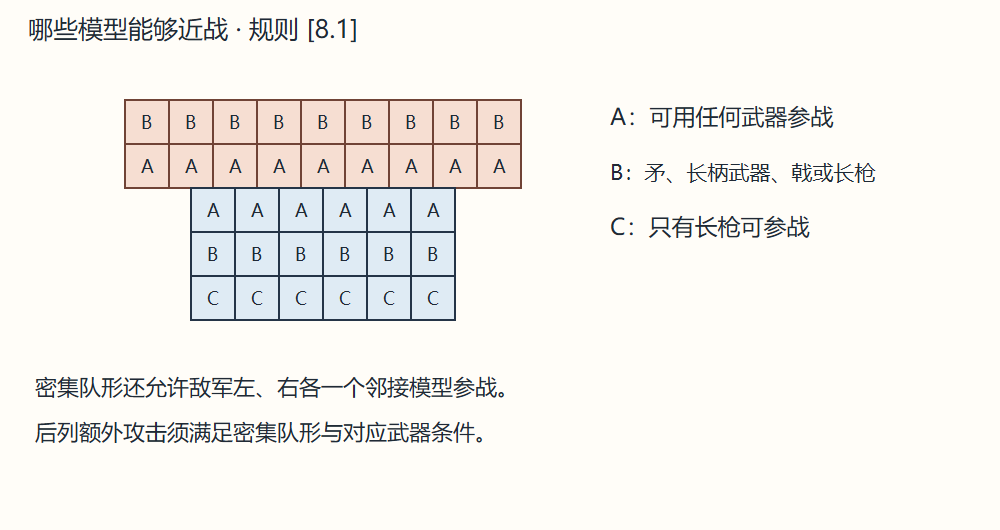
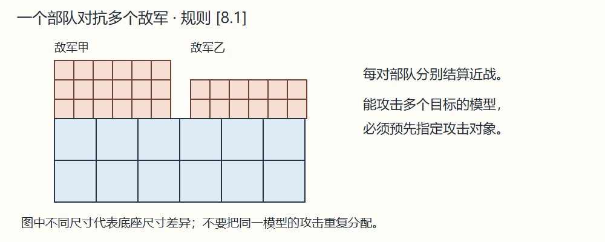

[8.1] 可以参战的兵力 Forces Eligible to Fight
本部队中与敌模型底座相接的模型均可攻击。密集队形还允许敌方接触正面左右各多一个模型参战。
密集队形使用长枪 pikes，接敌排正后方两排的模型，各提供一次额外攻击；使用矛、长柄武器或戟，则只有正后方第一排各提供一次。
一部队可同时与多个敌部队交战，每一组部队对战分别掷骰。同一模型若有多个可攻目标，所属玩家须事先指定攻击对象。



本部队中与敌模型底座相接的模型均可攻击。密集队形还允许敌方接触正面左右各多一个模型参战。
密集队形使用长枪 pikes，接敌排正后方两排的模型，各提供一次额外攻击；使用矛、长柄武器或戟，则只有正后方第一排各提供一次。
一部队可同时与多个敌部队交战，每一组部队对战分别掷骰。同一模型若有多个可攻目标，所属玩家须事先指定攻击对象。

